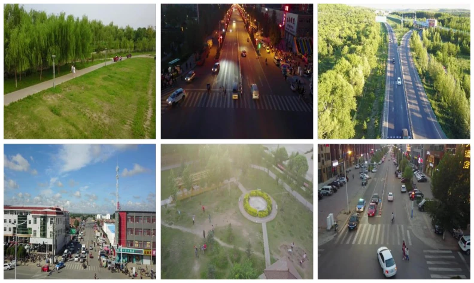
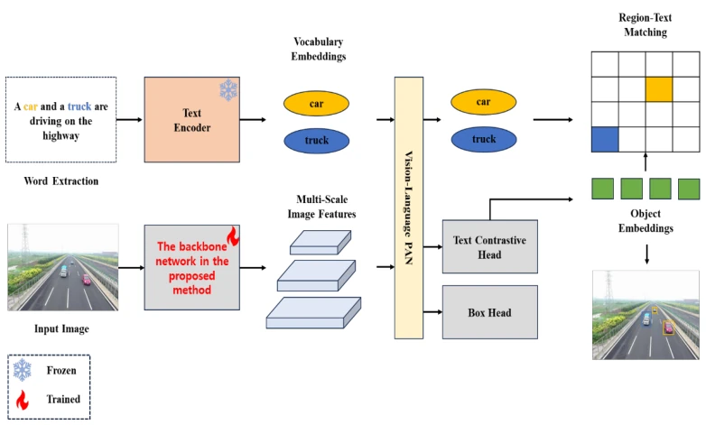
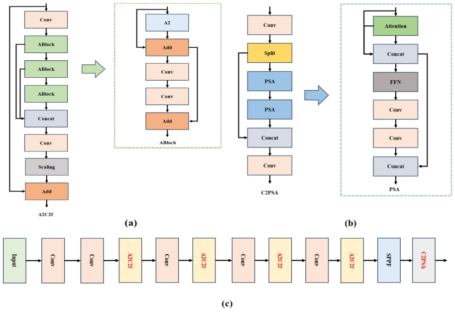
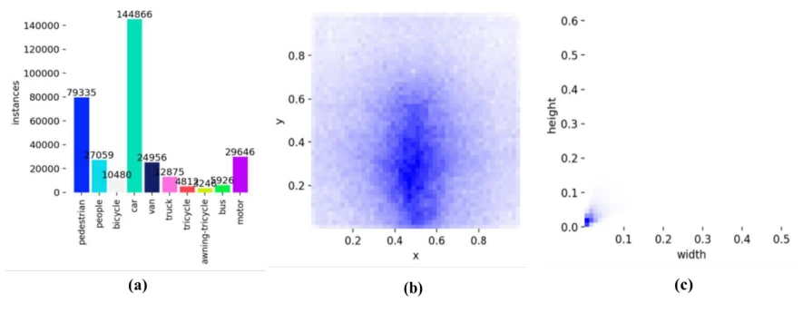
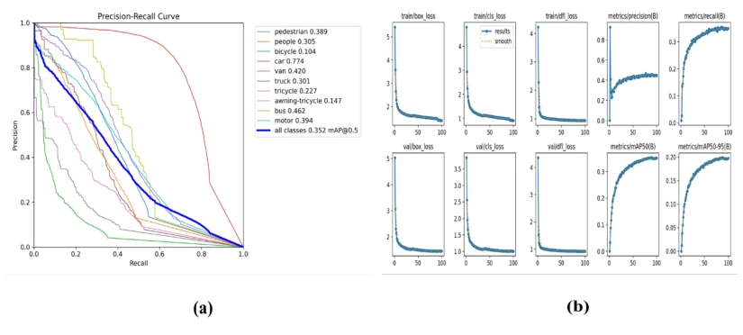

This paper adds an "attention mask" to YOLO-World, attempting to capture small objects from a drone perspective. Although the authors claim it is a "multimodal model", essentially it still replaces the YOLOv8 C2f layer with an A2C2f layer equipped with Area Attention, belonging to a typical "changing the soup but not the medicine" style fine-tuning. The advantages are indeed present; mAP on VisDrone increased by 2.7 percentage points, indicating that small object detection is indeed highly valued. However, there are also many drawbacks: in the conclusion section, mAP@0.5 was written as 30.7%, while the abstract and main text are both 35.2%, such a low-level error raises doubts about rigor. Additionally, mAP for classes such as bicycles and tricycles remains abysmal, indicating the model is still "blind" to extremely small objects. Overall, it is a practical engineering optimization, but still falls short of being "revolutionary", suitable for industrial deployment rather than academic breakthroughs.
Drone applications have evolved from toys to professional tools [1]-[3], but traditional detection models mostly target predefined categories, lacking flexibility. Existing research such as Huang et al. designed the UFP module [4], Du et al. proposed the CEASC network [5], although improving detection efficiency, they did not fully integrate text guidance. With AI development, users hope to specify targets using natural language (e.g., "find truck"), rather than hard-coded categories. However, small objects in drone images are dense and backgrounds are complex, existing YOLO series perform poorly on small objects in open-vocabulary detection. This paper aims to solve this pain point, by introducing attention mechanisms to enhance feature representation, achieving more precise text-guided small object localization, filling the performance gap of multimodal models in the drone vertical field.

Fig. 3. Representative Images from the VisDrone Dataset
The overall process follows the YOLO-World architecture: input images and text prompts are processed by the image encoder and CLIP text encoder respectively, features are fused in RepVL-PAN, finally outputting bounding boxes. The core innovation lies in backbone network replacement. Original YOLO-World uses YOLOv8's C2f layer, this paper replaces it with an A2C2f layer. A2C2f embeds an Area Attention (A2) module within the C2f structure, recalibrating feature responses through adaptive attention aggregation, emphasizing information-rich regions and suppressing background noise. Additionally, a C2PSA module (Fig. 2b) was introduced, utilizing spatial attention to explicitly learn position importance. This parallel processing structure expands the receptive field while maintaining lightweightness, enhancing local feature representation, specifically optimized for the small object boundary blur problem under drone perspective.

Fig. 1. Overall Architecture of the Proposed Model

Fig. 2. Architecture of the backbone network in the proposed YOLO-World model: (a) A2C2f layer flowchart, (b)
Experiments are based on the VisDrone dataset [43], containing 8629 drone images, covering 10 classes such as pedestrians, vehicles, etc. Baseline is the original YOLO-World, compared with SOTA models such as YOLOv9 to v26. Evaluation metrics include Precision, Recall, F1, mAP@0.5, and mAP@0.5-0.95. Results show that the improved model's Precision rose from 43.0% to 45.1%, mAP@0.5 improved from 32.5% to 35.2%, superior to all compared models. But ablation study found that mAP for small object classes like bicycles, tricycles still remains below 15%, mainly limited by few samples in the dataset and targets being too small. Training curves show the model converges stably (Fig. 5b), proving the effectiveness of the architecture modification.

Fig. 4. Instance Counts and Label Distributions Across Classes: (a) Instance Counts, (b) Label Positions, (c) Label

Fig. 5. Performance Evaluation of the Proposed Model: (a) Precision–Recall Curves, (b) Evolution of Key Metrics